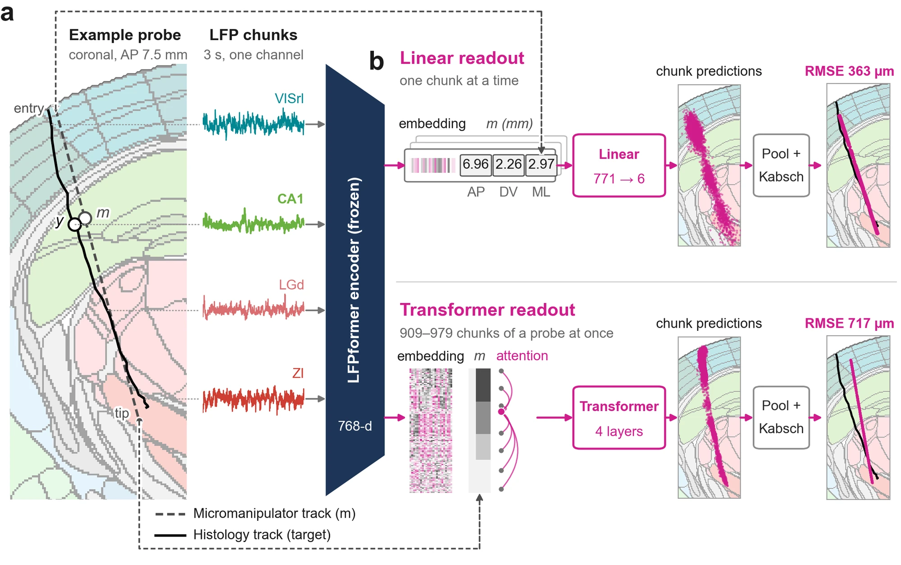

Self-supervised learning on raw LFP that places every Neuropixels channel in the Allen brain atlas.
One tile per test probe. Coloured line: truth · dots: pooled prediction · dark line: Kabsch-aligned.
One mouse, Neuropixels 2.0, five days over 2.5 months. No histology.

From the paper (Fig. 3c, Fig. 4).
@inproceedings{dey2026geometry,
title = {Geometry-Aware Self-Supervised Electrophysiology Representation Learning},
author = {Dey, S. and Lu, P.-J. and Parupudi, V. S. and Patel, M. and Conde Paredes, M.-E. and
V{\"o}r{\"o}slakos, M. and Maslarova, A. and Buzs{\'a}ki, G. and Vyas, S. and Varol, E.},
booktitle = {Advances in Neural Information Processing Systems},
year = {2026}
}